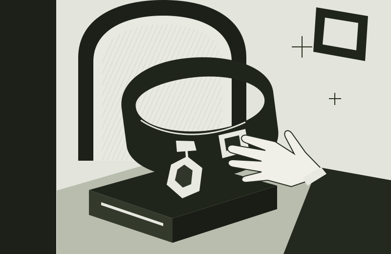
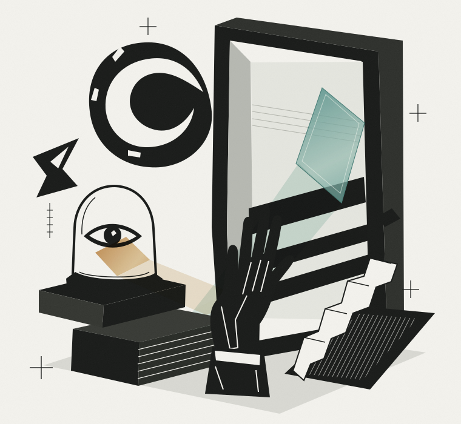
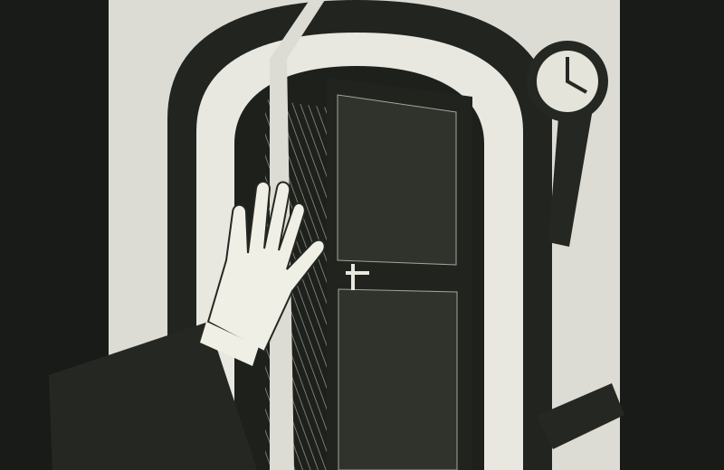
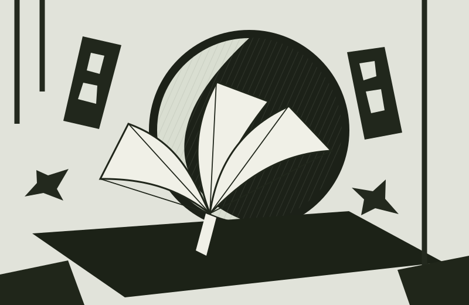
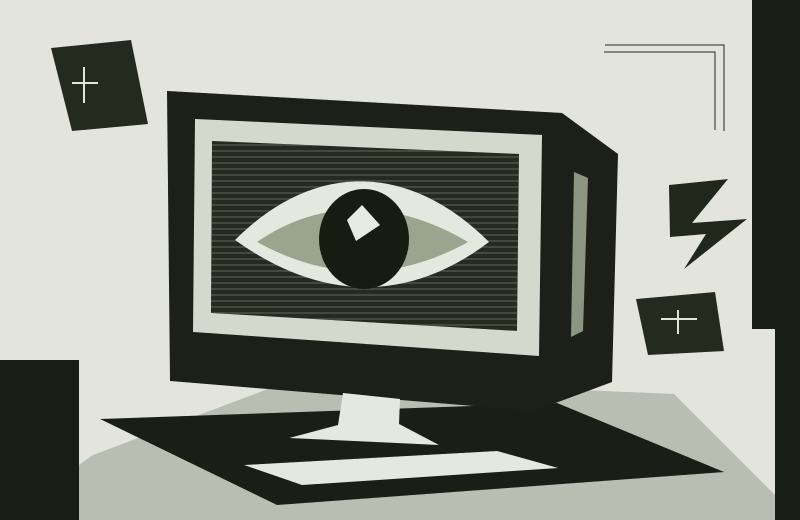
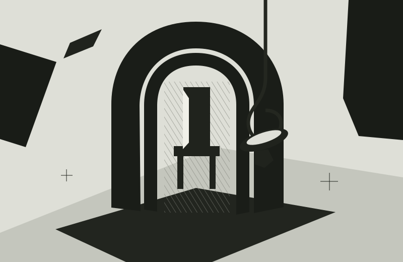
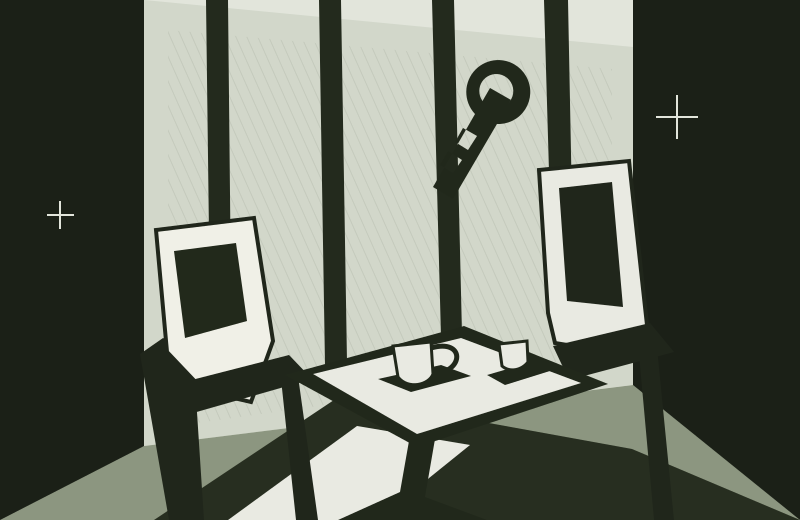

NO. 01ポチ ｜ TOUCH & TALK
そっと触れると、表情と言葉が変わる。ポチと過ごす、小さなひととき。
A COLLECTION OF STRANGE WORLDS
絵と、映像と、遊べる物語。
日常の隙間から、少し奇妙な世界へ。

01 / GAMES
選ぶ。触れる。見つめ返される。
六つの世界へつながる、小さな入口。

NO. 01そっと触れると、表情と言葉が変わる。ポチと過ごす、小さなひととき。

NO. 02その扉の先で待つのは、ルイス。触れるたび、反応が変わる。

NO. 03白玲瓏の気まぐれにふれる、小さな修練房へようこそ。

NO. 04選択するほど、距離が近づく。画面の向こうの彼と、五つの結末。

NO. 05ゼアンブロシア帝国。飼われる側から見る、もうひとつの世界。

NO. 06やさしく話しかけるノア。声をたどり、記憶の奥へ。
02 / ARCHIVE
世界の成り立ち。登場人物のこと。
ゲームの奥にある設定を、PDFで。
世界観・キャラクターの設定資料を、
こちらで公開していきます。
一部の資料は、結末・後日談の内容を含みます。
PDFは別タブで開きます。
03 / ELSEWHERE
物語は、こちらにも。
一枚の絵、一瞬の映像、ひとつの声。
実験室からこぼれた、物語のかけら。
TikTok
ショート動画・イラスト
—YouTube
映像・ボイス作品
—